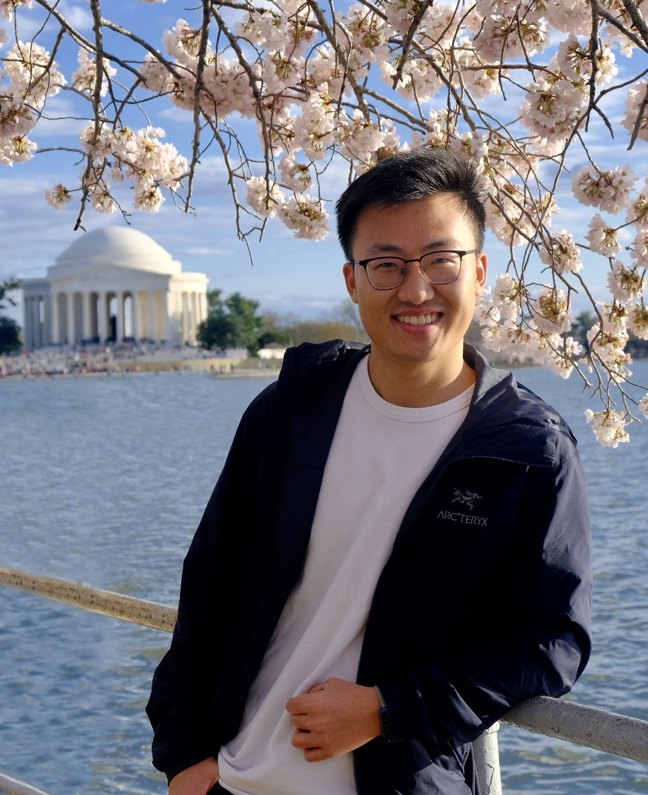

|
Juexiao Zhang
I am currently a master's student in computer science at the Courant Institute of Mathematical Sciences at New York University. I obtained my Bachelor's degree in EE from Tsinghua University. My First name in Chinese is 觉晓. It comes from a famous poem in Tang Dynasty (618-907 AD), which depicts a quiet spring morning. I also go by my English nickname Jeremy.
At NYU, I am doing fun research with Prof. Chen Feng at AI4CE Lab. I am interested in machine learning, especially representation learning and robot perception.
Email /
LinkedIn /
Google Scholar /
Github
|

|
|
Experience
Previously, I had the fortune to spend time working and learning in the NLP Lab at Tsinghua University, Berkeley AI Research at UC Berkeley and Baidu Research in Beijing.
|
|
Research
* indicates equal contribution.
|
|
Awards/Scholarships
National Scholarship in Tsinghua University, 2017
Scholarship of Academic Excellence in Tsinghua University, 2017
Scholarship of Outstanding Voluntary Work in Tsinghua University, 2017
|
|
Misc
In my spare time, I enjoy playing soccer, making coffee, reading, and traveling the world. I have two cats, Pidan[photo] and Benben[photo]
|
|
{kind=link}
![[photo]](images/Pidan.jpeg){kind=link}
![[photo]](images/Benben.jpeg){kind=link}